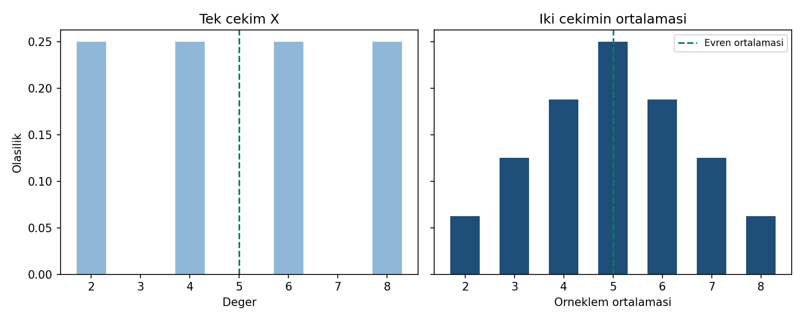

B04 · V1
Örneklem ortalaması neden değişir?
Rastgele benzetim değil, tam sayım
Yapay evren 2, 4, 6, 8. Geri koymalı iki bağımsız çekimin 16 eş olasılıklı sıralı sonucu vardır. (2,4) ve (4,2) farklı sonuçlardır.
Evren ortalaması 5, varyansı 5. Örneklem ortalamasının beklenen değeri 5, varyansı 2,5 ve standart hatası √2,5 ≈ 1,581139'dur. Tam dağılım varyansında bölen 16'dır; 15 değil.

Ortalama 2, 3, 4, 5, 6, 7, 8 için frekanslar 1, 2, 3, 4, 3, 2, 1; olasılıklar bu sayıların 16'ya bölümüdür. P(ortalama ≥ 7)=3/16=0,1875. Grafiğin düşey ekseni olasılıktır, yoğunluk değildir. SPSS yüzde çıktısını olasılıkla karşılaştırırken 100'e bölün.
ZIP'i tam çıkarın; kökteki KONTROL-BASLANGIC.md rehberini okuyun. Bu pakette analiz çalışma klasörü b04/ornek-01'dir. Python/R kontrolü 28 değeri sınar. Kodlar tarayıcıda çalışmaz; kendi Python, R veya SPSS ortamınızı kullanın.
Adım adım çözüm · Alıştırmalar · Yanıtlar · Grafik açıklaması
Örneklem ortalaması neden 5 çevresinde yoğunlaşır? Uç ortalamalar hâlâ mümkünken standart hata nasıl küçülür? Bu tam sayımı 2000 tekrarlı uygulamayla karıştırmayın.